作为数据的容器，我们常常需要跟变量打交道，不管这个变量是数字、数组、字符串、对象还是其他，因而可以说变量是构成语言的不可或缺的基础。本文是PHP内核探索之变量的第一篇，主要介绍zval的基本知识，包括如下几个方面的内容：
- Zval的基本结构
- 查看zval的方法：debug_zval_dump和xdebug
- Zval的原理，COW等
由于写作仓促，难免会有错误，欢迎指出。
一、Zval的基本结构
Zval是PHP中最重要的数据结构之一（另一个比较重要的数据结构是hash table），它包含了PHP中的变量值和类型的相关信息。它是一个struct，基本结构为：
struct _zval_struct { zvalue_value value; /* value */ zend_uint refcount__gc; /* variable ref count */ zend_uchar type; /* active type */ zend_uchar is_ref__gc; /* if it is a ref variable */ }; typedef struct _zval_struct zval;
其中：
1. zval_value value
变量的实际值，具体来说是一个zvalue_value的联合体（union）:
typedef union _zvalue_value { long lval; /* long value */ double dval; /* double value */ struct { /* string */ char *val; int len; } str; HashTable *ht; /* hash table value,used for array */ zend_object_value obj; /* object */ } zvalue_value;
2. zend_uint refcount__gc
该值实际上是一个计数器，用来保存有多少变量（或者符号，symbols,所有的符号都存在符号表（symble table）中, 不同的作用域使用不同的符号表，关于这一点，我们之后会论述）指向该zval。在变量生成时，其refcount=1，典型的赋值操作如$a = $b会令zval的refcount加1，而unset操作会相应的减1。在PHP5.3之前，使用引用计数的机制来实现GC，如果一个zval的refcount较少到0，那么Zend引擎会认为没有任何变量指向该zval，因此会释放该zval所占的内存空间。但，事情有时并不会那么简单。后面我们会看到，单纯的引用计数机制无法GC掉循环引用的zval，即使指向该zval的变量已经被unset，从而导致了内存泄露（Memory Leak）。
3. zend_uchar type
该字段用于表明变量的实际类型。在开始学习PHP的时候，我们已经知道，PHP中的变量包括四种标量类型（bool,int,float,string），两种复合类型（array, object）和两种特殊的类型（resource 和NULL）。在zend内部，这些类型对应于下面的宏（代码位置 phpsrc/Zend/zend.h）：
#define IS_NULL 0 #define IS_LONG 1 #define IS_DOUBLE 2 #define IS_BOOL 3 #define IS_ARRAY 4 #define IS_OBJECT 5 #define IS_STRING 6 #define IS_RESOURCE 7 #define IS_CONSTANT 8 #define IS_CONSTANT_ARRAY 9 #define IS_CALLABLE 10
4. is_ref__gc
这个字段用于标记变量是否是引用变量。对于普通的变量，该值为0，而对于引用型的变量，该值为1。这个变量会影响zval的共享、分离等。关于这点，我们之后会有论述。
正如名字所示，ref_count__gc和is_ref__gc是PHP的GC机制所需的很重要的两个字段，这两个字段的值，可以通过xdebug等调试工具查看。
二、xdebug的安装配置
xdebug是一个开源的PHP 性能分析和debug工具。虽然对于一般的程序调试，var_dump,echo,print,debug_backtrace等常见的调试工具已经基本够用，但对于一些复杂的调试和性能测试，xdebug绝对是一个很好的帮手（其他的如Xhprof等工具也很优秀）。
本文的基本环境：
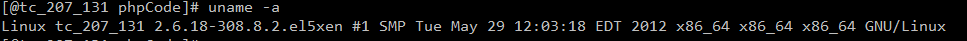
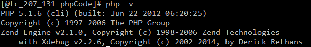
安装xdebug的基本过程为(实际上是源码编译一个扩展)：
1. 下载源码包.
下载地址为：http://www.xdebug.org/docs/install
本文中下载的版本为：xdebug-2.6.tar.gz
2. 解压
tar xvzf xdebug-2.6.tar.gz
3. 在xdebug的目录执行phpize
4. ./configure 配置
5. Make&& make install
这会生成xdebug.so扩展文件（zend_extension）,位置在xdebug/modules
6. 在php.ini中加载xdebug扩展
zend_extension=your-xdebug-path/xdebug.so
7. 添加xdebug的配置
xdebug.profiler_enable = on xdebug.default_enable = on xdebug.trace_output_dir="/tmp/xdebug" xdebug.trace_output_name = trace.%c.%p xdebug.profiler_output_dir="/tmp/xdebug" xdebug.profiler_output_name="cachegrind.out.%s"
这里不再详细介绍各个配置项的含义，详细的请看：http://www.xdebug.org/docs/all
现在，PHP中，应该已经有了Xdebug的扩展信息（php –m，也可以phpinfo()）：
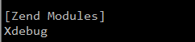
现在，你的脚本中，可以通过xdebug_debug_zval打印Zval的信息：
- $a = array( 'test' );
- $a[] = &$a;
- xdebug_debug_zval( 'a' );
3. Zval的更多原理
（注，本部分主要参考：http://derickrethans.nl/collecting-garbage-phps-take-on-variables.html， 作者Derick Rethans是一位优秀的PHP内核专家，在全世界做过多次报告，都有相关的pdf下载，这里（http://derickrethans.nl/talks.html ）有作者每次演讲的记录，很多都值得我们深入去学习研究）
前面我们已经说过，PHP使用Zval这种结构来保存变量，这里我们将继续追踪zval的更多细节。
1. 创建变量时，会创建一个zval.
- $str = "test zval";
- xdebug_debug_zval('str');
输出结果：
str: (refcount=1, is_ref=0)='test zval'
当使用$str="test zval";来创建变量时，会在当前作用域的符号表中插入新的符号（str）,由于该变量是一个普通的变量，因此会生成一个refcount=1且is_ref=0的zval容器。也就是说，实际上是这样的:
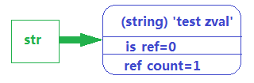
2. 变量赋值给另外一个变量时，会增加zval的refcount值。
- $str = "test zval";
- $str2 = $str;
- xdebug_debug_zval('str');
- xdebug_debug_zval('str2');
输出结果：
str: (refcount=2, is_ref=0)='test zval'
str2: (refcount=2, is_ref=0)='test zval'
同时我们看到，str和是str2这两个symbol的zval结构是一样的。这里其实是PHP所做的一个优化，由于str和str2都是普通变量，因而它们指向了同一个zval，而没有为str2开辟单独的zval。这么做，可以在一定程度上节省内存。这时的str,str2与zval的对应关系是这样的：

3. 使用unset时，对减少相应zval的refcount值
- $str = "test zval";
- $str3 = $str2 = $str;
- xdebug_debug_zval('str');
- unset($str2,$str3)
- xdebug_debug_zval('str');
结果为：
str: (refcount=3, is_ref=0)='test zval'
str: (refcount=1, is_ref=0)='test zval'
由于unset($str2,$str3)会将str2和str3从符号表中删除，因此，在unset之后，只有str指向该zval，如下图所示：
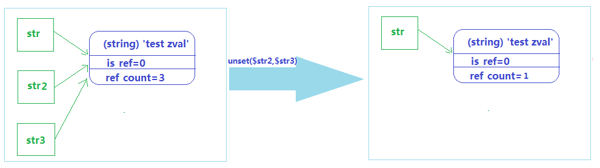
现在如果执行unset($str)，则由于zval的refcount会减少到0，该zval会从内存中清理。这当然是最理想的情况。
但是事情并不总是那么乐观。
4. 数组变量与普通变量生成的zval非常类似，但也有很大不同
与标量这些普通变量不同，数组和对象这类复合型的变量在生成zval时，会为每个item项生成一个zval容器。例如：
|
1
2
3
4
|
$ar
= array( 'id' => 38, 'name'=>
'shine'); <br><span style="font-size: 14px;">xdebug_debug_zval('ar');</span> |
打印出zval的结构是：
ar: (refcount=1, is_ref=0)=array ( 'id' => (refcount=1, is_ref=0)=38, 'name' => (refcount=1, is_ref=0)='shine' )
如下图所示：
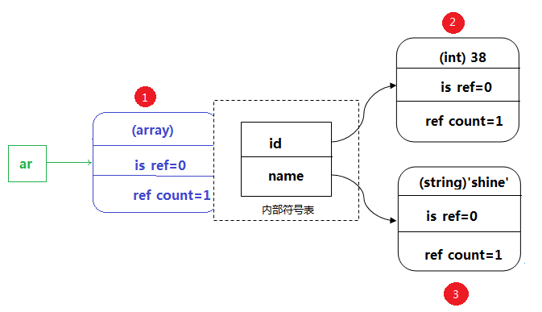
可以看出，变量$ar生成的过程中，共生成了3个zval容器（红色部分标注）。对于每个zval而言，refcount的增减规则与普通变量的相同。例如，我们在数组中添加另外一个元素，并把$ar['name']的值赋给它：
- $ar = array(
- 'id' => 38,
- 'name' => 'shine'
- );
- $ar['test'] = $ar['name'];
- xdebug_debug_zval('ar');
则打印出的zval为：
ar: (refcount=1, is_ref=0)=array ( 'id' => (refcount=1, is_ref=0)=38, 'name' => (refcount=2, is_ref=0)='shine', 'test' => (refcount=2, is_ref=0)='shine' )
如同普通变量一样，这时候,name和test这两个symbol指向同一个zval:
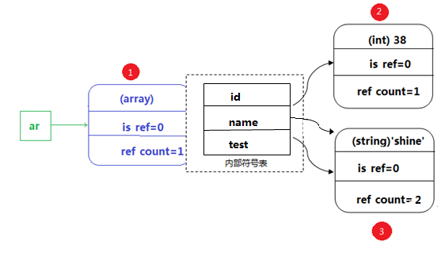
同样的，从数组中移除元素时，会从符号表中删除相应的符号，同时减少对应zval的refcount值。同样，如果zval的refcount值减少到0，那么就会从内存中删除该zval：
- $ar = array(
- 'id' => 38,
- 'name' => 'shine'
- );
- $ar['test'] = $ar['name'];
- unset($ar['test'],$ar['name']);
- xdebug_debug_zval('ar');
输出结果为：
ar: (refcount=1, is_ref=0)=array ('id' => (refcount=1, is_ref=0)=38)
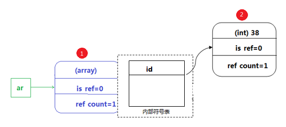
5. 引用的出现，会令zval的规则变得复杂
在加入引用之后，情况会变的稍微复杂一点。例如，在数组中添加对本身的引用：
- $a = $array('one');
- $a[] = &$a;
- xdebug_debug_zval('a');
输出的结果：
a: (refcount=2, is_ref=1)=array ( 0 => (refcount=1, is_ref=0)='one', 1 => (refcount=2, is_ref=1)=... )
上述输出中，…表示指向原始数组，因而这是一个循环的引用。如下图所示：
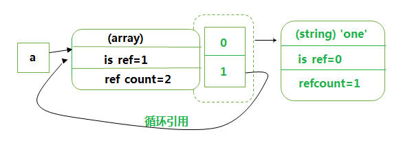
现在，我们对$a执行unset操作，这会在symbol table中删除相应的symbol,同时，zval的refcount减1（之前为2），也就是说，现在的zval应该是这样的结构：
(refcount=1, is_ref=1)=array ( 0 => (refcount=1, is_ref=0)='one', 1 => (refcount=1, is_ref=1)=... )
也就是下图所示的结构：
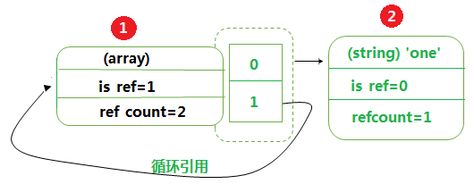
这时，不幸的事情发生了！
Unset之后，虽然没有变量指向该zval，但是该zval却不能被GC（指PHP5.3之前的单纯引用计数机制的GC）清理掉，因为zval的refcount均大于0。这样，这些zval实际上会一直存在内存中，直到请求结束（参考SAPI的生命周期）。在此之前，这些zval占据的内存不能被使用，便白白浪费了，换句话说，无法释放的内存导致了内存泄露。
如果这种内存泄露仅仅发生了一次或者少数几次，倒也还好，但如果是成千上万次的内存泄露，便是很大的问题了。尤其在长时间运行的脚本中（例如守护程序，一直在后台执行不会中断），由于无法回收内存，最终会导致系统“再无内存可用”。
6. zval分离（Copy on write和change on write）
前面我们已经介绍过，在变量赋值的过程中例如$b = $a，为了节省空间,并不会为$a和$b都开辟单独的zval，而是使用共享zval的形式：
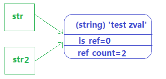
那么问题来了：如果其中一个变量发生变化时，如何处理zval的共享问题？
对于这样的代码：
- $a = "a simple test";
- $b = $a;
- echo "before write:".PHP_EOL;
- xdebug_debug_zval('a');
- xdebug_debug_zval('b');
- $b = "thss";
- echo "after write:".PHP_EOL;
- xdebug_debug_zval('a');
- xdebug_debug_zval('b');
打印的结果是：
before write: a: (refcount=2, is_ref=0)='a simple test' b: (refcount=2, is_ref=0)='a simple test' after write: a: (refcount=1, is_ref=0)='a simple test' b: (refcount=1, is_ref=0)='thss'
起初，符号表中a和b指向了同一个zval(这么做的原因是节省内存)，而后$b发生了变化，Zend会检查b指向的zval的refcount是否为1，如果是1，那么说明只有一个符号指向该zval，则直接更改zval。否则，说明这是一个共享的zval，需要将该zval分离出去，以保证单独变化互不影响，这种机制叫做COW –Copy on write。在很多场景下，COW都是一种比较高效的策略。
那么对于引用变量呢？
- $a = 'test';
- $b = &$a;<br>
- echo "before change:".PHP_EOL;
- xdebug_debug_zval('a');
- xdebug_debug_zval('b');<br>
- $b = 12;
- echo "after change:".PHP_EOL;
- xdebug_debug_zval('a');
- xdebug_debug_zval('b');<br>
- unset($b);
- echo "after unset:".PHP_EOL;
- xdebug_debug_zval('a');
- xdebug_debug_zval('b');
输出的结果为：
before change: a: (refcount=2, is_ref=1)='test' b: (refcount=2, is_ref=1)='test' after change: a: (refcount=2, is_ref=1)=12 b: (refcount=2, is_ref=1)=12 after unset: a: (refcount=1, is_ref=0)=12
可以看出，在改变了$b的值之后，Zend会检查zval的is_ref检查是否是引用变量，如果是引用变量，则直接更改即可，否则，需要执行刚刚提到的zval分离。由于$a 和 $b是引用变量，因而更改共享的zval实际上也间接更改了$a的值。而在unset($b)之后，变量$b从符号表中删除了。
这里也说明一个问题，unset并不是清除zval，而只是从符号表中删除相应的symbol。这样一来，之前很多的关于引用的疑问也可以理解了（下一节我们将深入探索PHP的引用）。